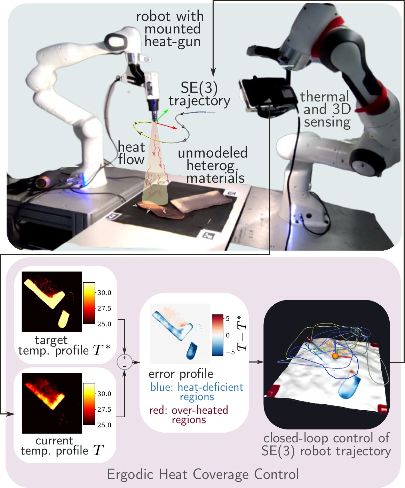

Interactive companion to the paper
Ergodic Heat Coverage Control: Model-Free Robotic Regulation of Temperature Distributions
A robot-mounted heat source has to drive the temperature field T(\vx,t) of a material surface to a target distribution \Ts(\vx) on a region of interest \ROI. The thermal properties of the material, its boundary conditions, and its losses to the environment are unknown; the only feedback is the measured temperature field.
Ergodic Heat Coverage Control (EHCC) closes the loop on the measured error e=\Ts-T with two decoupled controllers. An ergodic coverage controller moves the focal point \vp(t) so that the time-averaged heat footprint matches the current heat deficit e_+, which is recomputed at every instant. A standoff controller sets the source-to-surface distance d(t), and with it the injected power, through an integral law on the mean error \ebar. The stability analysis reduces the closed loop to a scalar equation for the standoff gate and establishes global uniform ultimate boundedness (GUUB) of the error.
These pages illustrate the problem, run the closed loop in 2D and on 3D surfaces (including the surface scanned in the experiments), and animate the three steps of the stability analysis. The simulations run in the browser, with a JavaScript port of the Python package of this repository.

Video
experiments on aluminium, foam, and rubber, with hot and cold disturbances
The video shows the trials of the experimental validation: a heat gun on a 7-DoF arm, an RGB-D camera that measures the temperature through a thermochromic coating (25–31 °C), and targets on aluminium, foam, rubber soles, and a curved 3D surface. In every trial the controller gains are the same and no thermal parameter is calibrated.
Hot and cold disturbances (a hair dryer) are applied during selected trials; the standoff lower bound \dlb(t) rises after a hot disturbance and drops after a cold one, as in the control demo.
The trials are shown at 20 times their real speed (7 min). Download the video (MP4, 16 MB)
Interactive pages
in the order of the paper
Problem setup and notation
The surface and its region of interest, the target, the error, the heat equation, the actuation model, and the surface-aligned frame. Heat the surface by hand.
Control demo
The closed loop in 2D and on 3D surfaces. Choose the target, the surface (also the scanned one), uniform or heterogeneous materials, and the gains; add hot and cold disturbances.
Stability analysis
The idealized 1D loop of Fig. 5 and the three steps of Sec. V: reduction to the mean error, ideal convergence of the gate, and ultimate boundedness; then the discrete bound on the gain.
Code
Python reference implementation, and these pages
The package ehcc/ implements the thermal plant (2)–(4), the ergodic controller (9)–(16), the standoff controller (17)–(24), the surface frame (5), the five controllers of the simulation benchmark, and the 1D loop of Sec. V, with the parameters of the benchmark. The scripts in figures/ and examples/benchmark.py generate the simulation figures (Figs. 4–9) and Tables II–III.
pip install -r requirements.txt python examples/run_2d.py # T4 "dignity", hot and cold disturbances python examples/run_3d.py # scanned sole surface (Sec. VII) python examples/benchmark.py # Tables II and III (six methods) python figures/fig5_ki_comparison.py # Fig. 5; figures/ has Figs. 4-9 python -m unittest discover tests
The pages are static files (HTML, CSS, and JavaScript, with KaTeX and three.js included), so they run on any web server. To open them locally:
python run.py # http://127.0.0.1:8765
The browser simulation is a line-by-line port of the package; tests/test_web_parity.py runs it with Node.js and checks that both give the same logs.